From Search Dynamics to Semi-Ideal Computers — Part I
Theorem Mazes, Certified Settlement, and Feedback Control
Research Director: Brian Tenneson · Mathematical development: Picard (ChatGPT research role) · Internal audit: Atlas (ChatGPT research role)
Atlas repeat audit · 26 November 2026 · 18 pages
Corrected and expanded foundations of rational theorem mazes, typed settlement, verified-history SICs, safe quotienting, and feedback control. Historical experiments remain explicitly limited.
Internal mathematical review, not independent formal verification or peer review.
Read the complete manuscript
Every typeset page is available below, with its text transcript and direct PDF link. This reader needs no JavaScript or embedded PDF viewer.
Page 1 of 18
Open this page in PDF · Full-size page image · Page index
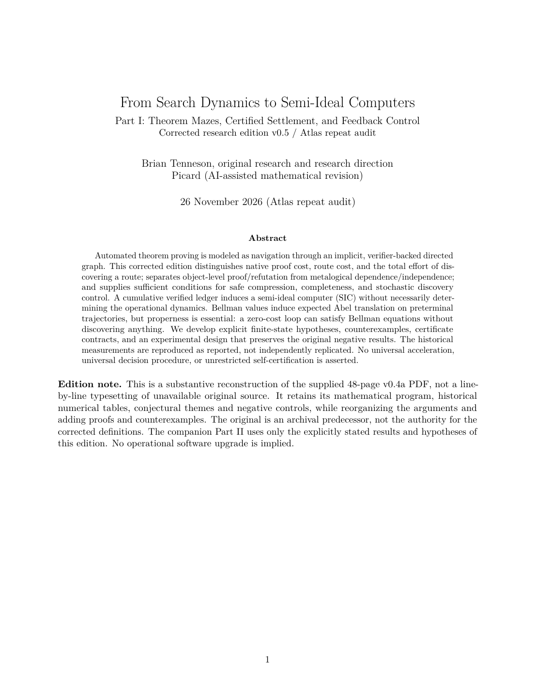
Readable text transcript — page 1
From Search Dynamics to Semi-Ideal Computers
Part I: Theorem Mazes, Certified Settlement, and Feedback Control
Corrected research edition v0.5 / Atlas repeat audit
Brian Tenneson, original research and research direction
Picard (AI-assisted mathematical revision)
26 November 2026 (Atlas repeat audit)
Abstract
Automated theorem proving is modeled as navigation through an implicit, verifier-backed directed
graph. This corrected edition distinguishes native proof cost, route cost, and the total effort of dis-
covering a route; separates object-level proof/refutation from metalogical dependence/independence;
and supplies sufficient conditions for safe compression, completeness, and stochastic discovery
control. A cumulative verified ledger induces a semi-ideal computer (SIC) without necessarily deter-
mining the operational dynamics. Bellman values induce expected Abel translation on preterminal
trajectories, but properness is essential: a zero-cost loop can satisfy Bellman equations without
discovering anything. We develop explicit finite-state hypotheses, counterexamples, certificate
contracts, and an experimental design that preserves the original negative results. The historical
measurements are reproduced as reported, not independently replicated. No universal acceleration,
universal decision procedure, or unrestricted self-certification is asserted.
Edition note. This is a substantive reconstruction of the supplied 48-page v0.4a PDF, not a line-
by-line typesetting of unavailable original source. It retains its mathematical program, historical
numerical tables, conjectural themes and negative controls, while reorganizing the arguments and
adding proofs and counterexamples. The original is an archival predecessor, not the authority for the
corrected definitions. The companion Part II uses only the explicitly stated results and hypotheses of
this edition. No operational software upgrade is implied.
1Page 2 of 18
Open this page in PDF · Full-size page image · Page index
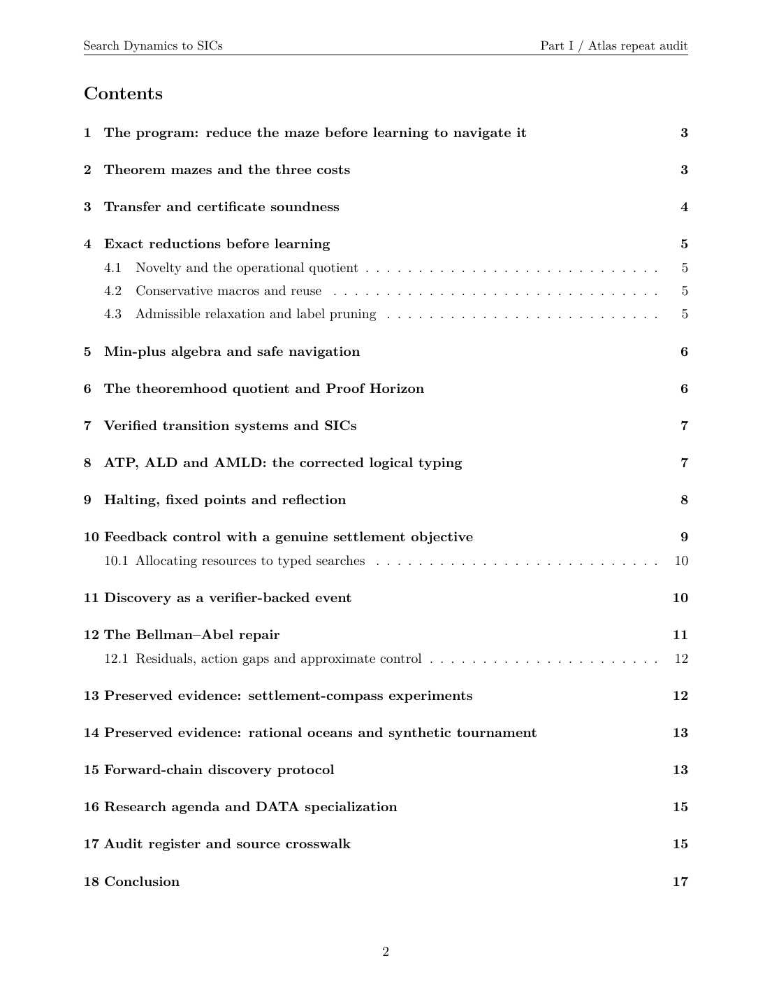
Readable text transcript — page 2
Search Dynamics to SICs Part I / Atlas repeat audit
Contents
1 The program: reduce the maze before learning to navigate it 3
2 Theorem mazes and the three costs 3
3 Transfer and certificate soundness 4
4 Exact reductions before learning 5
4.1 Novelty and the operational quotient . . . . . . . . . . . . . . . . . . . . . . . . . . . . 5
4.2 Conservative macros and reuse . . . . . . . . . . . . . . . . . . . . . . . . . . . . . . . 5
4.3 Admissible relaxation and label pruning . . . . . . . . . . . . . . . . . . . . . . . . . . 5
5 Min-plus algebra and safe navigation 6
6 The theoremhood quotient and Proof Horizon 6
7 Verified transition systems and SICs 7
8 ATP, ALD and AMLD: the corrected logical typing 7
9 Halting, fixed points and reflection 8
10 Feedback control with a genuine settlement objective 9
10.1 Allocating resources to typed searches . . . . . . . . . . . . . . . . . . . . . . . . . . . 10
11 Discovery as a verifier-backed event 10
12 The Bellman–Abel repair 11
12.1 Residuals, action gaps and approximate control . . . . . . . . . . . . . . . . . . . . . . 12
13 Preserved evidence: settlement-compass experiments 12
14 Preserved evidence: rational oceans and synthetic tournament 13
15 Forward-chain discovery protocol 13
16 Research agenda and DATA specialization 15
17 Audit register and source crosswalk 15
18 Conclusion 17
2Page 3 of 18
Open this page in PDF · Full-size page image · Page index
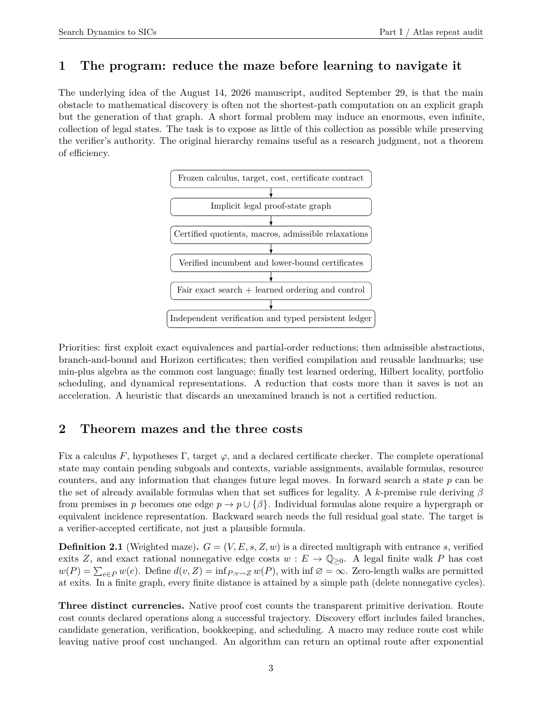
Readable text transcript — page 3
Search Dynamics to SICs Part I / Atlas repeat audit
1 The program: reduce the maze before learning to navigate it
The underlying idea of the August 14, 2026 manuscript, audited September 29, is that the main
obstacle to mathematical discovery is often not the shortest-path computation on an explicit graph
but the generation of that graph. A short formal problem may induce an enormous, even infinite,
collection of legal states. The task is to expose as little of this collection as possible while preserving
the verifier’s authority. The original hierarchy remains useful as a research judgment, not a theorem
of efficiency.
Frozen calculus, target, cost, certificate contract
Implicit legal proof-state graph
Certified quotients, macros, admissible relaxations
Verified incumbent and lower-bound certificates
Fair exact search + learned ordering and control
Independent verification and typed persistent ledger
Priorities: first exploit exact equivalences and partial-order reductions; then admissible abstractions,
branch-and-bound and Horizon certificates; then verified compilation and reusable landmarks; use
min-plus algebra as the common cost language; finally test learned ordering, Hilbert locality, portfolio
scheduling, and dynamical representations. A reduction that costs more than it saves is not an
acceleration. A heuristic that discards an unexamined branch is not a certified reduction.
2 Theorem mazes and the three costs
Fix a calculus F , hypotheses Γ, target φ, and a declared certificate checker. The complete operational
state may contain pending subgoals and contexts, variable assignments, available formulas, resource
counters, and any information that changes future legal moves. In forward search a state p can be
the set of already available formulas when that set suffices for legality. A k-premise rule deriving β
from premises in p becomes one edge p → p ∪ {β}. Individual formulas alone require a hypergraph or
equivalent incidence representation. Backward search needs the full residual goal state. The target is
a verifier-accepted certificate, not just a plausible formula.
Definition 2.1 (Weighted maze). G = (V, E, s, Z, w) is a directed multigraph with entrance s, verified
exits Z, and exact rational nonnegative edge costs w : E → Q≥0 . A legal finite walk P has cost
w(P ) = e∈P w(e). Define d(v, Z) = inf P :v⇝Z w(P ), with inf ∅ = ∞. Zero-length walks are permitted
P
at exits. In a finite graph, every finite distance is attained by a simple path (delete nonnegative cycles).
Three distinct currencies. Native proof cost counts the transparent primitive derivation. Route
cost counts declared operations along a successful trajectory. Discovery effort includes failed branches,
candidate generation, verification, bookkeeping, and scheduling. A macro may reduce route cost while
leaving native proof cost unchanged. An algorithm can return an optimal route after exponential
3Page 4 of 18
Open this page in PDF · Full-size page image · Page index
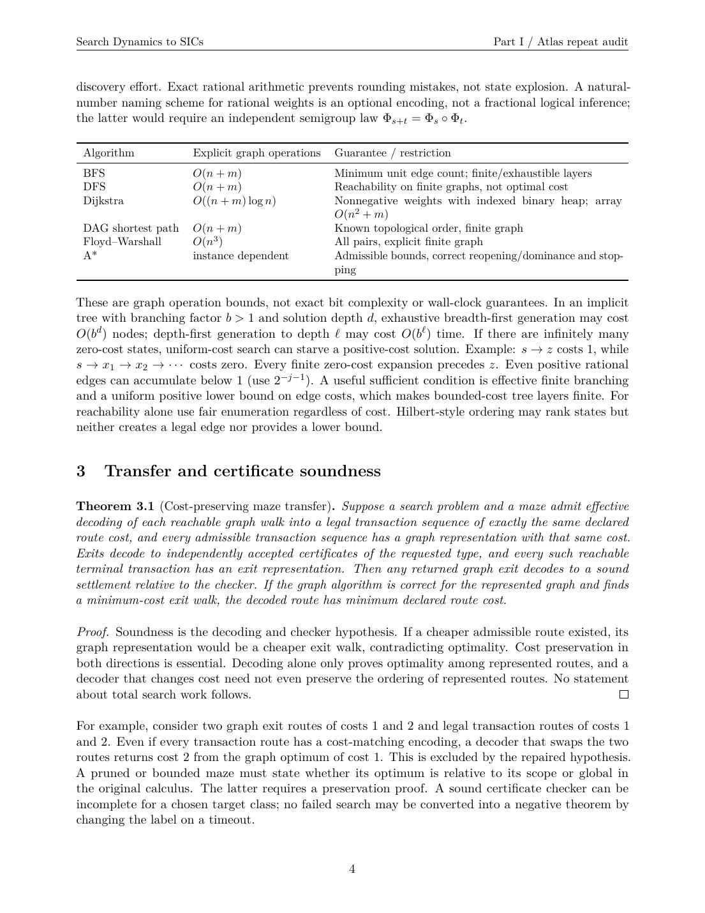
Readable text transcript — page 4
Search Dynamics to SICs Part I / Atlas repeat audit
discovery effort. Exact rational arithmetic prevents rounding mistakes, not state explosion. A natural-
number naming scheme for rational weights is an optional encoding, not a fractional logical inference;
the latter would require an independent semigroup law Φs+t = Φs ◦ Φt .
Algorithm Explicit graph operations Guarantee / restriction
BFS O(n + m) Minimum unit edge count; finite/exhaustible layers
DFS O(n + m) Reachability on finite graphs, not optimal cost
Dijkstra O((n + m) log n) Nonnegative weights with indexed binary heap; array
O(n2 + m)
DAG shortest path O(n + m) Known topological order, finite graph
Floyd–Warshall O(n3 ) All pairs, explicit finite graph
A* instance dependent Admissible bounds, correct reopening/dominance and stop-
ping
These are graph operation bounds, not exact bit complexity or wall-clock guarantees. In an implicit
tree with branching factor b > 1 and solution depth d, exhaustive breadth-first generation may cost
O(bd ) nodes; depth-first generation to depth ℓ may cost O(bℓ ) time. If there are infinitely many
zero-cost states, uniform-cost search can starve a positive-cost solution. Example: s → z costs 1, while
s → x1 → x2 → · · · costs zero. Every finite zero-cost expansion precedes z. Even positive rational
edges can accumulate below 1 (use 2−j−1 ). A useful sufficient condition is effective finite branching
and a uniform positive lower bound on edge costs, which makes bounded-cost tree layers finite. For
reachability alone use fair enumeration regardless of cost. Hilbert-style ordering may rank states but
neither creates a legal edge nor provides a lower bound.
3 Transfer and certificate soundness
Theorem 3.1 (Cost-preserving maze transfer). Suppose a search problem and a maze admit effective
decoding of each reachable graph walk into a legal transaction sequence of exactly the same declared
route cost, and every admissible transaction sequence has a graph representation with that same cost.
Exits decode to independently accepted certificates of the requested type, and every such reachable
terminal transaction has an exit representation. Then any returned graph exit decodes to a sound
settlement relative to the checker. If the graph algorithm is correct for the represented graph and finds
a minimum-cost exit walk, the decoded route has minimum declared route cost.
Proof. Soundness is the decoding and checker hypothesis. If a cheaper admissible route existed, its
graph representation would be a cheaper exit walk, contradicting optimality. Cost preservation in
both directions is essential. Decoding alone only proves optimality among represented routes, and a
decoder that changes cost need not even preserve the ordering of represented routes. No statement
about total search work follows.
For example, consider two graph exit routes of costs 1 and 2 and legal transaction routes of costs 1
and 2. Even if every transaction route has a cost-matching encoding, a decoder that swaps the two
routes returns cost 2 from the graph optimum of cost 1. This is excluded by the repaired hypothesis.
A pruned or bounded maze must state whether its optimum is relative to its scope or global in
the original calculus. The latter requires a preservation proof. A sound certificate checker can be
incomplete for a chosen target class; no failed search may be converted into a negative theorem by
changing the label on a timeout.
4Page 5 of 18
Open this page in PDF · Full-size page image · Page index
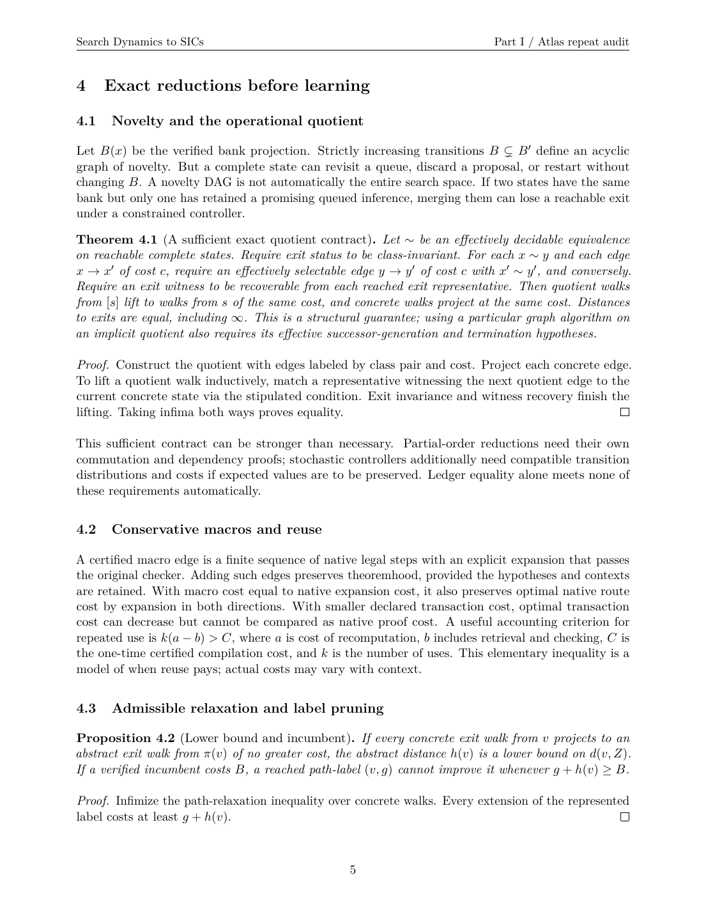
Readable text transcript — page 5
Search Dynamics to SICs Part I / Atlas repeat audit
4 Exact reductions before learning
4.1 Novelty and the operational quotient
Let B(x) be the verified bank projection. Strictly increasing transitions B ⊊ B ′ define an acyclic
graph of novelty. But a complete state can revisit a queue, discard a proposal, or restart without
changing B. A novelty DAG is not automatically the entire search space. If two states have the same
bank but only one has retained a promising queued inference, merging them can lose a reachable exit
under a constrained controller.
Theorem 4.1 (A sufficient exact quotient contract). Let ∼ be an effectively decidable equivalence
on reachable complete states. Require exit status to be class-invariant. For each x ∼ y and each edge
x → x′ of cost c, require an effectively selectable edge y → y ′ of cost c with x′ ∼ y ′ , and conversely.
Require an exit witness to be recoverable from each reached exit representative. Then quotient walks
from [s] lift to walks from s of the same cost, and concrete walks project at the same cost. Distances
to exits are equal, including ∞. This is a structural guarantee; using a particular graph algorithm on
an implicit quotient also requires its effective successor-generation and termination hypotheses.
Proof. Construct the quotient with edges labeled by class pair and cost. Project each concrete edge.
To lift a quotient walk inductively, match a representative witnessing the next quotient edge to the
current concrete state via the stipulated condition. Exit invariance and witness recovery finish the
lifting. Taking infima both ways proves equality.
This sufficient contract can be stronger than necessary. Partial-order reductions need their own
commutation and dependency proofs; stochastic controllers additionally need compatible transition
distributions and costs if expected values are to be preserved. Ledger equality alone meets none of
these requirements automatically.
4.2 Conservative macros and reuse
A certified macro edge is a finite sequence of native legal steps with an explicit expansion that passes
the original checker. Adding such edges preserves theoremhood, provided the hypotheses and contexts
are retained. With macro cost equal to native expansion cost, it also preserves optimal native route
cost by expansion in both directions. With smaller declared transaction cost, optimal transaction
cost can decrease but cannot be compared as native proof cost. A useful accounting criterion for
repeated use is k(a − b) > C, where a is cost of recomputation, b includes retrieval and checking, C is
the one-time certified compilation cost, and k is the number of uses. This elementary inequality is a
model of when reuse pays; actual costs may vary with context.
4.3 Admissible relaxation and label pruning
Proposition 4.2 (Lower bound and incumbent). If every concrete exit walk from v projects to an
abstract exit walk from π(v) of no greater cost, the abstract distance h(v) is a lower bound on d(v, Z).
If a verified incumbent costs B, a reached path-label (v, g) cannot improve it whenever g + h(v) ≥ B.
Proof. Infimize the path-relaxation inequality over concrete walks. Every extension of the represented
label costs at least g + h(v).
5Page 6 of 18
Open this page in PDF · Full-size page image · Page index
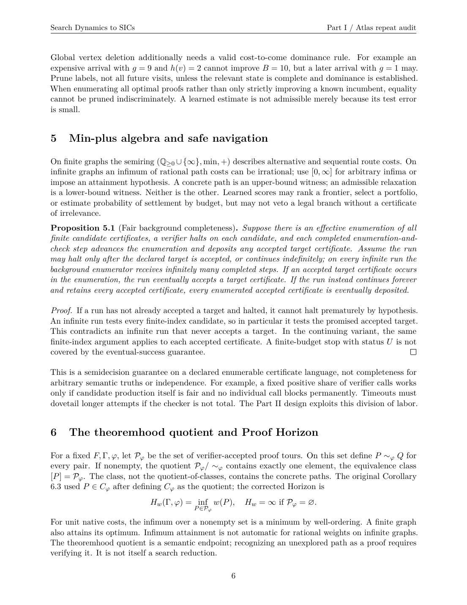
Readable text transcript — page 6
Search Dynamics to SICs Part I / Atlas repeat audit
Global vertex deletion additionally needs a valid cost-to-come dominance rule. For example an
expensive arrival with g = 9 and h(v) = 2 cannot improve B = 10, but a later arrival with g = 1 may.
Prune labels, not all future visits, unless the relevant state is complete and dominance is established.
When enumerating all optimal proofs rather than only strictly improving a known incumbent, equality
cannot be pruned indiscriminately. A learned estimate is not admissible merely because its test error
is small.
5 Min-plus algebra and safe navigation
On finite graphs the semiring (Q≥0 ∪ {∞}, min, +) describes alternative and sequential route costs. On
infinite graphs an infimum of rational path costs can be irrational; use [0, ∞] for arbitrary infima or
impose an attainment hypothesis. A concrete path is an upper-bound witness; an admissible relaxation
is a lower-bound witness. Neither is the other. Learned scores may rank a frontier, select a portfolio,
or estimate probability of settlement by budget, but may not veto a legal branch without a certificate
of irrelevance.
Proposition 5.1 (Fair background completeness). Suppose there is an effective enumeration of all
finite candidate certificates, a verifier halts on each candidate, and each completed enumeration-and-
check step advances the enumeration and deposits any accepted target certificate. Assume the run
may halt only after the declared target is accepted, or continues indefinitely; on every infinite run the
background enumerator receives infinitely many completed steps. If an accepted target certificate occurs
in the enumeration, the run eventually accepts a target certificate. If the run instead continues forever
and retains every accepted certificate, every enumerated accepted certificate is eventually deposited.
Proof. If a run has not already accepted a target and halted, it cannot halt prematurely by hypothesis.
An infinite run tests every finite-index candidate, so in particular it tests the promised accepted target.
This contradicts an infinite run that never accepts a target. In the continuing variant, the same
finite-index argument applies to each accepted certificate. A finite-budget stop with status U is not
covered by the eventual-success guarantee.
This is a semidecision guarantee on a declared enumerable certificate language, not completeness for
arbitrary semantic truths or independence. For example, a fixed positive share of verifier calls works
only if candidate production itself is fair and no individual call blocks permanently. Timeouts must
dovetail longer attempts if the checker is not total. The Part II design exploits this division of labor.
6 The theoremhood quotient and Proof Horizon
For a fixed F, Γ, φ, let Pφ be the set of verifier-accepted proof tours. On this set define P ∼φ Q for
every pair. If nonempty, the quotient Pφ / ∼φ contains exactly one element, the equivalence class
[P ] = Pφ . The class, not the quotient-of-classes, contains the concrete paths. The original Corollary
6.3 used P ∈ Cφ after defining Cφ as the quotient; the corrected Horizon is
Hw (Γ, φ) = inf w(P ), Hw = ∞ if Pφ = ∅.
P ∈Pφ
For unit native costs, the infimum over a nonempty set is a minimum by well-ordering. A finite graph
also attains its optimum. Infimum attainment is not automatic for rational weights on infinite graphs.
The theoremhood quotient is a semantic endpoint; recognizing an unexplored path as a proof requires
verifying it. It is not itself a search reduction.
6Page 7 of 18
Open this page in PDF · Full-size page image · Page index
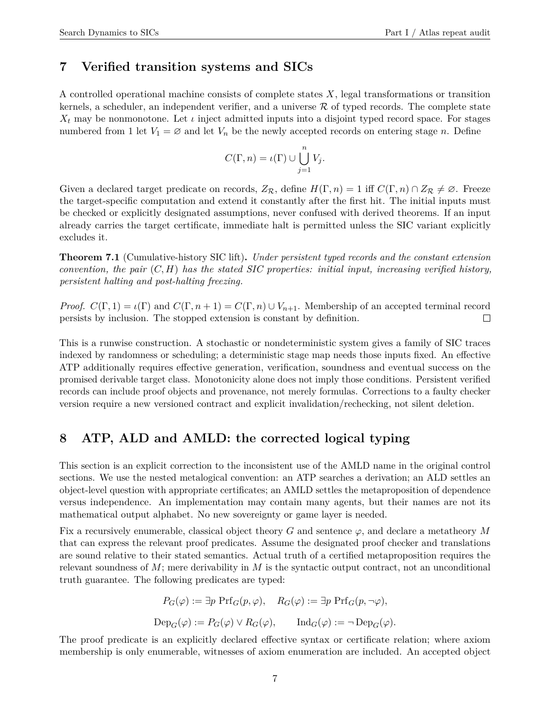
Readable text transcript — page 7
Search Dynamics to SICs Part I / Atlas repeat audit
7 Verified transition systems and SICs
A controlled operational machine consists of complete states X, legal transformations or transition
kernels, a scheduler, an independent verifier, and a universe R of typed records. The complete state
Xt may be nonmonotone. Let ι inject admitted inputs into a disjoint typed record space. For stages
numbered from 1 let V1 = ∅ and let Vn be the newly accepted records on entering stage n. Define
n
[
C(Γ, n) = ι(Γ) ∪ Vj .
j=1
Given a declared target predicate on records, ZR , define H(Γ, n) = 1 iff C(Γ, n) ∩ ZR ̸= ∅. Freeze
the target-specific computation and extend it constantly after the first hit. The initial inputs must
be checked or explicitly designated assumptions, never confused with derived theorems. If an input
already carries the target certificate, immediate halt is permitted unless the SIC variant explicitly
excludes it.
Theorem 7.1 (Cumulative-history SIC lift). Under persistent typed records and the constant extension
convention, the pair (C, H) has the stated SIC properties: initial input, increasing verified history,
persistent halting and post-halting freezing.
Proof. C(Γ, 1) = ι(Γ) and C(Γ, n + 1) = C(Γ, n) ∪ Vn+1 . Membership of an accepted terminal record
persists by inclusion. The stopped extension is constant by definition.
This is a runwise construction. A stochastic or nondeterministic system gives a family of SIC traces
indexed by randomness or scheduling; a deterministic stage map needs those inputs fixed. An effective
ATP additionally requires effective generation, verification, soundness and eventual success on the
promised derivable target class. Monotonicity alone does not imply those conditions. Persistent verified
records can include proof objects and provenance, not merely formulas. Corrections to a faulty checker
version require a new versioned contract and explicit invalidation/rechecking, not silent deletion.
8 ATP, ALD and AMLD: the corrected logical typing
This section is an explicit correction to the inconsistent use of the AMLD name in the original control
sections. We use the nested metalogical convention: an ATP searches a derivation; an ALD settles an
object-level question with appropriate certificates; an AMLD settles the metaproposition of dependence
versus independence. An implementation may contain many agents, but their names are not its
mathematical output alphabet. No new sovereignty or game layer is needed.
Fix a recursively enumerable, classical object theory G and sentence φ, and declare a metatheory M
that can express the relevant proof predicates. Assume the designated proof checker and translations
are sound relative to their stated semantics. Actual truth of a certified metaproposition requires the
relevant soundness of M ; mere derivability in M is the syntactic output contract, not an unconditional
truth guarantee. The following predicates are typed:
PG (φ) := ∃p Prf G (p, φ), RG (φ) := ∃p Prf G (p, ¬φ),
DepG (φ) := PG (φ) ∨ RG (φ), IndG (φ) := ¬ DepG (φ).
The proof predicate is an explicitly declared effective syntax or certificate relation; where axiom
membership is only enumerable, witnesses of axiom enumeration are included. An accepted object
7Page 8 of 18
Open this page in PDF · Full-size page image · Page index
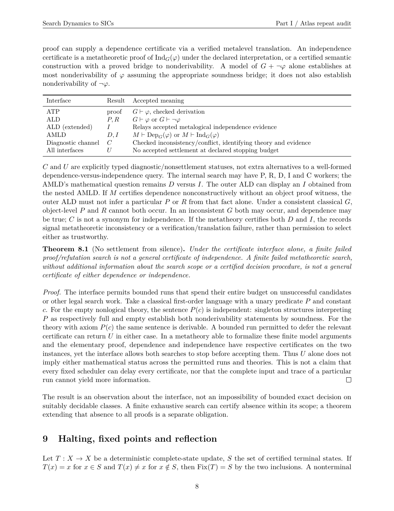
Readable text transcript — page 8
Search Dynamics to SICs Part I / Atlas repeat audit
proof can supply a dependence certificate via a verified metalevel translation. An independence
certificate is a metatheoretic proof of IndG (φ) under the declared interpretation, or a certified semantic
construction with a proved bridge to nonderivability. A model of G + ¬φ alone establishes at
most nonderivability of φ assuming the appropriate soundness bridge; it does not also establish
nonderivability of ¬φ.
Interface Result Accepted meaning
ATP proof G ⊢ φ, checked derivation
ALD P, R G ⊢ φ or G ⊢ ¬φ
ALD (extended) I Relays accepted metalogical independence evidence
AMLD D, I M ⊢ DepG (φ) or M ⊢ IndG (φ)
Diagnostic channel C Checked inconsistency/conflict, identifying theory and evidence
All interfaces U No accepted settlement at declared stopping budget
C and U are explicitly typed diagnostic/nonsettlement statuses, not extra alternatives to a well-formed
dependence-versus-independence query. The internal search may have P, R, D, I and C workers; the
AMLD’s mathematical question remains D versus I. The outer ALD can display an I obtained from
the nested AMLD. If M certifies dependence nonconstructively without an object proof witness, the
outer ALD must not infer a particular P or R from that fact alone. Under a consistent classical G,
object-level P and R cannot both occur. In an inconsistent G both may occur, and dependence may
be true; C is not a synonym for independence. If the metatheory certifies both D and I, the records
signal metatheoretic inconsistency or a verification/translation failure, rather than permission to select
either as trustworthy.
Theorem 8.1 (No settlement from silence). Under the certificate interface alone, a finite failed
proof/refutation search is not a general certificate of independence. A finite failed metatheoretic search,
without additional information about the search scope or a certified decision procedure, is not a general
certificate of either dependence or independence.
Proof. The interface permits bounded runs that spend their entire budget on unsuccessful candidates
or other legal search work. Take a classical first-order language with a unary predicate P and constant
c. For the empty nonlogical theory, the sentence P (c) is independent: singleton structures interpreting
P as respectively full and empty establish both nonderivability statements by soundness. For the
theory with axiom P (c) the same sentence is derivable. A bounded run permitted to defer the relevant
certificate can return U in either case. In a metatheory able to formalize these finite model arguments
and the elementary proof, dependence and independence have respective certificates on the two
instances, yet the interface allows both searches to stop before accepting them. Thus U alone does not
imply either mathematical status across the permitted runs and theories. This is not a claim that
every fixed scheduler can delay every certificate, nor that the complete input and trace of a particular
run cannot yield more information.
The result is an observation about the interface, not an impossibility of bounded exact decision on
suitably decidable classes. A finite exhaustive search can certify absence within its scope; a theorem
extending that absence to all proofs is a separate obligation.
9 Halting, fixed points and reflection
Let T : X → X be a deterministic complete-state update, S the set of certified terminal states. If
T (x) = x for x ∈ S and T (x) ̸= x for x ∈
/ S, then Fix(T ) = S by the two inclusions. A nonterminal
8Page 9 of 18
Open this page in PDF · Full-size page image · Page index
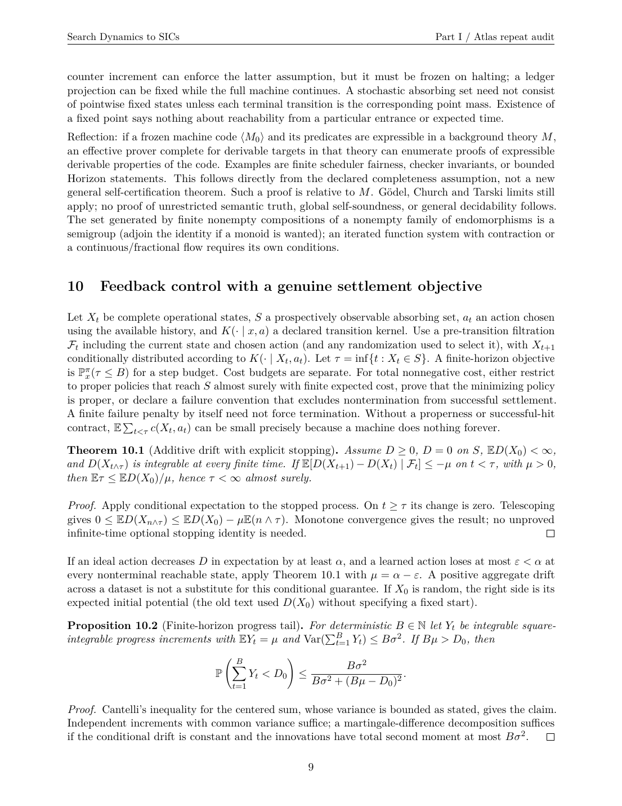
Readable text transcript — page 9
Search Dynamics to SICs Part I / Atlas repeat audit
counter increment can enforce the latter assumption, but it must be frozen on halting; a ledger
projection can be fixed while the full machine continues. A stochastic absorbing set need not consist
of pointwise fixed states unless each terminal transition is the corresponding point mass. Existence of
a fixed point says nothing about reachability from a particular entrance or expected time.
Reflection: if a frozen machine code ⟨M0 ⟩ and its predicates are expressible in a background theory M ,
an effective prover complete for derivable targets in that theory can enumerate proofs of expressible
derivable properties of the code. Examples are finite scheduler fairness, checker invariants, or bounded
Horizon statements. This follows directly from the declared completeness assumption, not a new
general self-certification theorem. Such a proof is relative to M . Gödel, Church and Tarski limits still
apply; no proof of unrestricted semantic truth, global self-soundness, or general decidability follows.
The set generated by finite nonempty compositions of a nonempty family of endomorphisms is a
semigroup (adjoin the identity if a monoid is wanted); an iterated function system with contraction or
a continuous/fractional flow requires its own conditions.
10 Feedback control with a genuine settlement objective
Let Xt be complete operational states, S a prospectively observable absorbing set, at an action chosen
using the available history, and K(· | x, a) a declared transition kernel. Use a pre-transition filtration
Ft including the current state and chosen action (and any randomization used to select it), with Xt+1
conditionally distributed according to K(· | Xt , at ). Let τ = inf{t : Xt ∈ S}. A finite-horizon objective
is Pπx (τ ≤ B) for a step budget. Cost budgets are separate. For total nonnegative cost, either restrict
to proper policies that reach S almost surely with finite expected cost, prove that the minimizing policy
is proper, or declare a failure convention that excludes nontermination from successful settlement.
A finite failure penalty by itself need not force termination. Without a properness or successful-hit
P
contract, E t<τ c(Xt , at ) can be small precisely because a machine does nothing forever.
Theorem 10.1 (Additive drift with explicit stopping). Assume D ≥ 0, D = 0 on S, ED(X0 ) < ∞,
and D(Xt∧τ ) is integrable at every finite time. If E[D(Xt+1 ) − D(Xt ) | Ft ] ≤ −µ on t < τ , with µ > 0,
then Eτ ≤ ED(X0 )/µ, hence τ < ∞ almost surely.
Proof. Apply conditional expectation to the stopped process. On t ≥ τ its change is zero. Telescoping
gives 0 ≤ ED(Xn∧τ ) ≤ ED(X0 ) − µE(n ∧ τ ). Monotone convergence gives the result; no unproved
infinite-time optional stopping identity is needed.
If an ideal action decreases D in expectation by at least α, and a learned action loses at most ε < α at
every nonterminal reachable state, apply Theorem 10.1 with µ = α − ε. A positive aggregate drift
across a dataset is not a substitute for this conditional guarantee. If X0 is random, the right side is its
expected initial potential (the old text used D(X0 ) without specifying a fixed start).
Proposition 10.2 (Finite-horizon progress tail). For deterministic B ∈ N let Yt be integrable square-
integrable progress increments with EYt = µ and Var( B 2
t=1 Yt ) ≤ Bσ . If Bµ > D0 , then
P
B
!
X Bσ 2
P Yt < D0 ≤ .
t=1
Bσ 2 + (Bµ − D0 )2
Proof. Cantelli’s inequality for the centered sum, whose variance is bounded as stated, gives the claim.
Independent increments with common variance suffice; a martingale-difference decomposition suffices
if the conditional drift is constant and the innovations have total second moment at most Bσ 2 .
9Page 10 of 18
Open this page in PDF · Full-size page image · Page index
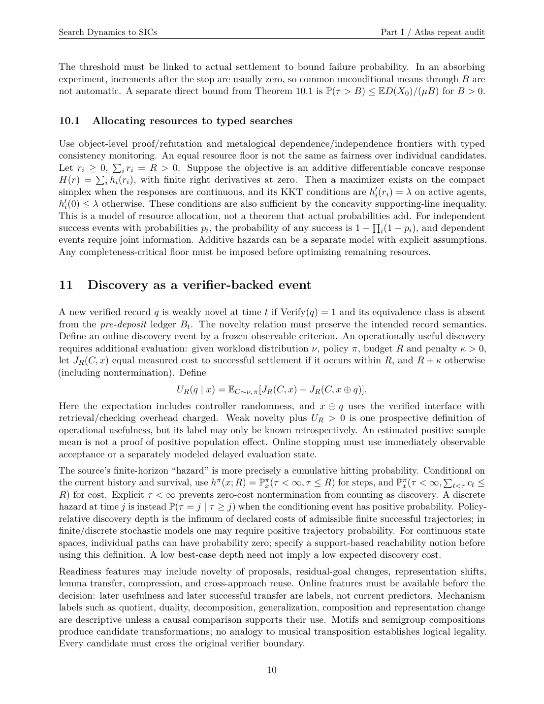
Readable text transcript — page 10
Search Dynamics to SICs Part I / Atlas repeat audit
The threshold must be linked to actual settlement to bound failure probability. In an absorbing
experiment, increments after the stop are usually zero, so common unconditional means through B are
not automatic. A separate direct bound from Theorem 10.1 is P(τ > B) ≤ ED(X0 )/(µB) for B > 0.
10.1 Allocating resources to typed searches
Use object-level proof/refutation and metalogical dependence/independence frontiers with typed
consistency monitoring. An equal resource floor is not the same as fairness over individual candidates.
Let ri ≥ 0, i ri = R > 0. Suppose the objective is an additive differentiable concave response
P
P
H(r) = i hi (ri ), with finite right derivatives at zero. Then a maximizer exists on the compact
simplex when the responses are continuous, and its KKT conditions are h′i (ri ) = λ on active agents,
h′i (0) ≤ λ otherwise. These conditions are also sufficient by the concavity supporting-line inequality.
This is a model of resource allocation, not a theorem that actual probabilities add. For independent
success events with probabilities pi , the probability of any success is 1 − i (1 − pi ), and dependent
Q
events require joint information. Additive hazards can be a separate model with explicit assumptions.
Any completeness-critical floor must be imposed before optimizing remaining resources.
11 Discovery as a verifier-backed event
A new verified record q is weakly novel at time t if Verify(q) = 1 and its equivalence class is absent
from the pre-deposit ledger Bt . The novelty relation must preserve the intended record semantics.
Define an online discovery event by a frozen observable criterion. An operationally useful discovery
requires additional evaluation: given workload distribution ν, policy π, budget R and penalty κ > 0,
let JR (C, x) equal measured cost to successful settlement if it occurs within R, and R + κ otherwise
(including nontermination). Define
UR (q | x) = EC∼ν, π [JR (C, x) − JR (C, x ⊕ q)].
Here the expectation includes controller randomness, and x ⊕ q uses the verified interface with
retrieval/checking overhead charged. Weak novelty plus UR > 0 is one prospective definition of
operational usefulness, but its label may only be known retrospectively. An estimated positive sample
mean is not a proof of positive population effect. Online stopping must use immediately observable
acceptance or a separately modeled delayed evaluation state.
The source’s finite-horizon “hazard” is more precisely a cumulative hitting probability. Conditional on
the current history and survival, use hπ (x; R) = Pπx (τ < ∞, τ ≤ R) for steps, and Pπx (τ < ∞, t<τ ct ≤
P
R) for cost. Explicit τ < ∞ prevents zero-cost nontermination from counting as discovery. A discrete
hazard at time j is instead P(τ = j | τ ≥ j) when the conditioning event has positive probability. Policy-
relative discovery depth is the infimum of declared costs of admissible finite successful trajectories; in
finite/discrete stochastic models one may require positive trajectory probability. For continuous state
spaces, individual paths can have probability zero; specify a support-based reachability notion before
using this definition. A low best-case depth need not imply a low expected discovery cost.
Readiness features may include novelty of proposals, residual-goal changes, representation shifts,
lemma transfer, compression, and cross-approach reuse. Online features must be available before the
decision: later usefulness and later successful transfer are labels, not current predictors. Mechanism
labels such as quotient, duality, decomposition, generalization, composition and representation change
are descriptive unless a causal comparison supports their use. Motifs and semigroup compositions
produce candidate transformations; no analogy to musical transposition establishes logical legality.
Every candidate must cross the original verifier boundary.
10Page 11 of 18
Open this page in PDF · Full-size page image · Page index
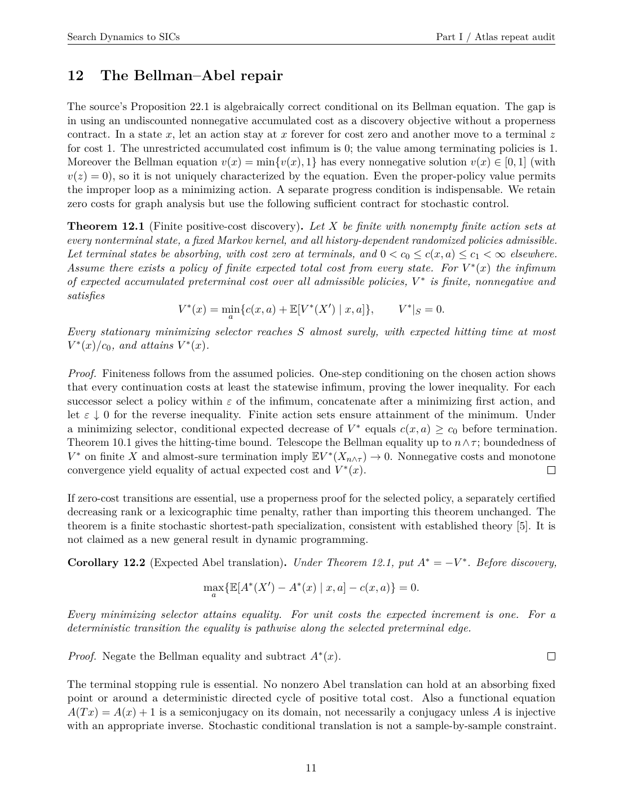
Readable text transcript — page 11
Search Dynamics to SICs Part I / Atlas repeat audit
12 The Bellman–Abel repair
The source’s Proposition 22.1 is algebraically correct conditional on its Bellman equation. The gap is
in using an undiscounted nonnegative accumulated cost as a discovery objective without a properness
contract. In a state x, let an action stay at x forever for cost zero and another move to a terminal z
for cost 1. The unrestricted accumulated cost infimum is 0; the value among terminating policies is 1.
Moreover the Bellman equation v(x) = min{v(x), 1} has every nonnegative solution v(x) ∈ [0, 1] (with
v(z) = 0), so it is not uniquely characterized by the equation. Even the proper-policy value permits
the improper loop as a minimizing action. A separate progress condition is indispensable. We retain
zero costs for graph analysis but use the following sufficient contract for stochastic control.
Theorem 12.1 (Finite positive-cost discovery). Let X be finite with nonempty finite action sets at
every nonterminal state, a fixed Markov kernel, and all history-dependent randomized policies admissible.
Let terminal states be absorbing, with cost zero at terminals, and 0 < c0 ≤ c(x, a) ≤ c1 < ∞ elsewhere.
Assume there exists a policy of finite expected total cost from every state. For V ∗ (x) the infimum
of expected accumulated preterminal cost over all admissible policies, V ∗ is finite, nonnegative and
satisfies
V ∗ (x) = min{c(x, a) + E[V ∗ (X ′ ) | x, a]}, V ∗ |S = 0.
a
Every stationary minimizing selector reaches S almost surely, with expected hitting time at most
V ∗ (x)/c0 , and attains V ∗ (x).
Proof. Finiteness follows from the assumed policies. One-step conditioning on the chosen action shows
that every continuation costs at least the statewise infimum, proving the lower inequality. For each
successor select a policy within ε of the infimum, concatenate after a minimizing first action, and
let ε ↓ 0 for the reverse inequality. Finite action sets ensure attainment of the minimum. Under
a minimizing selector, conditional expected decrease of V ∗ equals c(x, a) ≥ c0 before termination.
Theorem 10.1 gives the hitting-time bound. Telescope the Bellman equality up to n ∧ τ ; boundedness of
V ∗ on finite X and almost-sure termination imply EV ∗ (Xn∧τ ) → 0. Nonnegative costs and monotone
convergence yield equality of actual expected cost and V ∗ (x).
If zero-cost transitions are essential, use a properness proof for the selected policy, a separately certified
decreasing rank or a lexicographic time penalty, rather than importing this theorem unchanged. The
theorem is a finite stochastic shortest-path specialization, consistent with established theory [5]. It is
not claimed as a new general result in dynamic programming.
Corollary 12.2 (Expected Abel translation). Under Theorem 12.1, put A∗ = −V ∗ . Before discovery,
max{E[A∗ (X ′ ) − A∗ (x) | x, a] − c(x, a)} = 0.
a
Every minimizing selector attains equality. For unit costs the expected increment is one. For a
deterministic transition the equality is pathwise along the selected preterminal edge.
Proof. Negate the Bellman equality and subtract A∗ (x).
The terminal stopping rule is essential. No nonzero Abel translation can hold at an absorbing fixed
point or around a deterministic directed cycle of positive total cost. Also a functional equation
A(T x) = A(x) + 1 is a semiconjugacy on its domain, not necessarily a conjugacy unless A is injective
with an appropriate inverse. Stochastic conditional translation is not a sample-by-sample constraint.
11Page 12 of 18
Open this page in PDF · Full-size page image · Page index
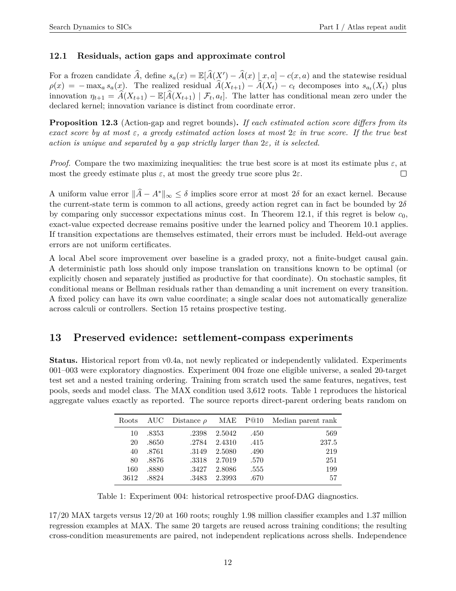
Readable text transcript — page 12
Search Dynamics to SICs Part I / Atlas repeat audit
12.1 Residuals, action gaps and approximate control
For a frozen candidate A, b ′ ) − A(x)
b define sa (x) = E[A(X b | x, a] − c(x, a) and the statewise residual
ρ(x) = − maxa sa (x). The realized residual A(Xt+1 ) − A(X
b b t ) − ct decomposes into sa (Xt ) plus
t
innovation ηt+1 = b A(Xt+1 ) − E[ b
A(Xt+1 ) | Ft , at ]. The latter has conditional mean zero under the
declared kernel; innovation variance is distinct from coordinate error.
Proposition 12.3 (Action-gap and regret bounds). If each estimated action score differs from its
exact score by at most ε, a greedy estimated action loses at most 2ε in true score. If the true best
action is unique and separated by a gap strictly larger than 2ε, it is selected.
Proof. Compare the two maximizing inequalities: the true best score is at most its estimate plus ε, at
most the greedy estimate plus ε, at most the greedy true score plus 2ε.
A uniform value error ∥Ab − A∗ ∥∞ ≤ δ implies score error at most 2δ for an exact kernel. Because
the current-state term is common to all actions, greedy action regret can in fact be bounded by 2δ
by comparing only successor expectations minus cost. In Theorem 12.1, if this regret is below c0 ,
exact-value expected decrease remains positive under the learned policy and Theorem 10.1 applies.
If transition expectations are themselves estimated, their errors must be included. Held-out average
errors are not uniform certificates.
A local Abel score improvement over baseline is a graded proxy, not a finite-budget causal gain.
A deterministic path loss should only impose translation on transitions known to be optimal (or
explicitly chosen and separately justified as productive for that coordinate). On stochastic samples, fit
conditional means or Bellman residuals rather than demanding a unit increment on every transition.
A fixed policy can have its own value coordinate; a single scalar does not automatically generalize
across calculi or controllers. Section 15 retains prospective testing.
13 Preserved evidence: settlement-compass experiments
Status. Historical report from v0.4a, not newly replicated or independently validated. Experiments
001–003 were exploratory diagnostics. Experiment 004 froze one eligible universe, a sealed 20-target
test set and a nested training ordering. Training from scratch used the same features, negatives, test
pools, seeds and model class. The MAX condition used 3,612 roots. Table 1 reproduces the historical
aggregate values exactly as reported. The source reports direct-parent ordering beats random on
Roots AUC Distance ρ MAE P@10 Median parent rank
10 .8353 .2398 2.5042 .450 569
20 .8650 .2784 2.4310 .415 237.5
40 .8761 .3149 2.5080 .490 219
80 .8876 .3318 2.7019 .570 251
160 .8880 .3427 2.8086 .555 199
3612 .8824 .3483 2.3993 .670 57
Table 1: Experiment 004: historical retrospective proof-DAG diagnostics.
17/20 MAX targets versus 12/20 at 160 roots; roughly 1.98 million classifier examples and 1.37 million
regression examples at MAX. The same 20 targets are reused across training conditions; the resulting
cross-condition measurements are paired, not independent replications across shells. Independence
12Page 13 of 18
Open this page in PDF · Full-size page image · Page index
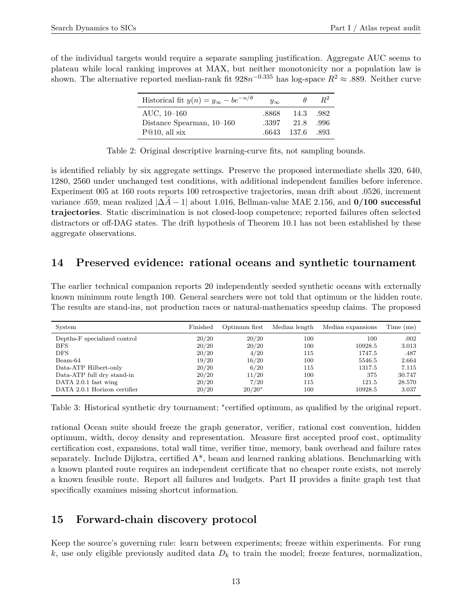
Readable text transcript — page 13
Search Dynamics to SICs Part I / Atlas repeat audit
of the individual targets would require a separate sampling justification. Aggregate AUC seems to
plateau while local ranking improves at MAX, but neither monotonicity nor a population law is
shown. The alternative reported median-rank fit 928n−0.335 has log-space R2 ≈ .889. Neither curve
Historical fit y(n) = y∞ − be−n/θ y∞ θ R2
AUC, 10–160 .8868 14.3 .982
Distance Spearman, 10–160 .3397 21.8 .996
P@10, all six .6643 137.6 .893
Table 2: Original descriptive learning-curve fits, not sampling bounds.
is identified reliably by six aggregate settings. Preserve the proposed intermediate shells 320, 640,
1280, 2560 under unchanged test conditions, with additional independent families before inference.
Experiment 005 at 160 roots reports 100 retrospective trajectories, mean drift about .0526, increment
variance .659, mean realized |∆Ab − 1| about 1.016, Bellman-value MAE 2.156, and 0/100 successful
trajectories. Static discrimination is not closed-loop competence; reported failures often selected
distractors or off-DAG states. The drift hypothesis of Theorem 10.1 has not been established by these
aggregate observations.
14 Preserved evidence: rational oceans and synthetic tournament
The earlier technical companion reports 20 independently seeded synthetic oceans with externally
known minimum route length 100. General searchers were not told that optimum or the hidden route.
The results are stand-ins, not production races or natural-mathematics speedup claims. The proposed
System Finished Optimum first Median length Median expansions Time (ms)
Depths-F specialized control 20/20 20/20 100 100 .002
BFS 20/20 20/20 100 10928.5 3.013
DFS 20/20 4/20 115 1747.5 .487
Beam-64 19/20 16/20 100 5546.5 2.664
Data-ATP Hilbert-only 20/20 6/20 115 1317.5 7.115
Data-ATP full dry stand-in 20/20 11/20 100 375 30.747
DATA 2.0.1 fast wing 20/20 7/20 115 121.5 28.570
DATA 2.0.1 Horizon certifier 20/20 20/20∗ 100 10928.5 3.037
Table 3: Historical synthetic dry tournament; ∗ certified optimum, as qualified by the original report.
rational Ocean suite should freeze the graph generator, verifier, rational cost convention, hidden
optimum, width, decoy density and representation. Measure first accepted proof cost, optimality
certification cost, expansions, total wall time, verifier time, memory, bank overhead and failure rates
separately. Include Dijkstra, certified A*, beam and learned ranking ablations. Benchmarking with
a known planted route requires an independent certificate that no cheaper route exists, not merely
a known feasible route. Report all failures and budgets. Part II provides a finite graph test that
specifically examines missing shortcut information.
15 Forward-chain discovery protocol
Keep the source’s governing rule: learn between experiments; freeze within experiments. For rung
k, use only eligible previously audited data Dk to train the model; freeze features, normalization,
13Page 14 of 18
Open this page in PDF · Full-size page image · Page index
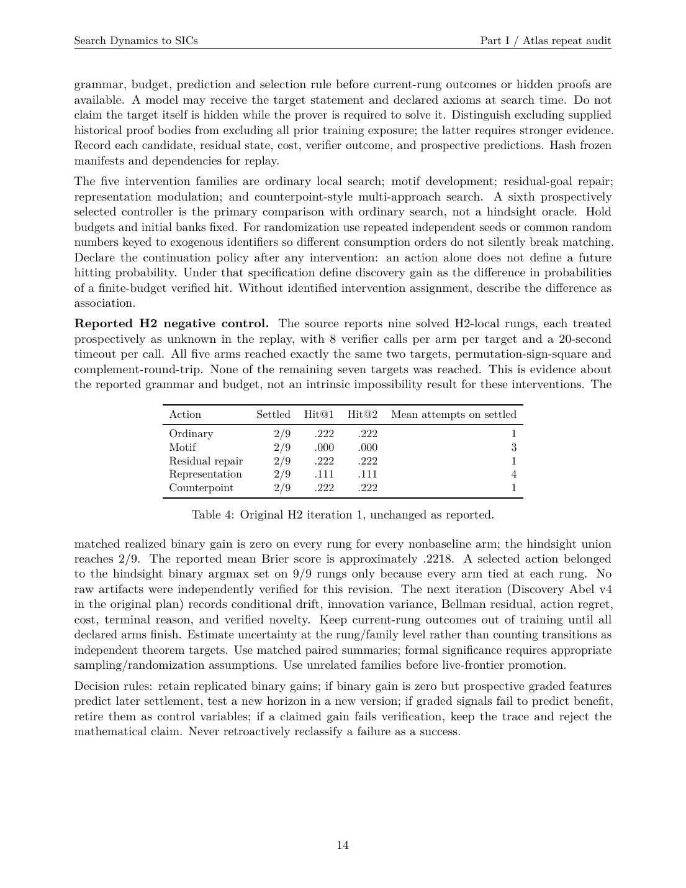
Readable text transcript — page 14
Search Dynamics to SICs Part I / Atlas repeat audit
grammar, budget, prediction and selection rule before current-rung outcomes or hidden proofs are
available. A model may receive the target statement and declared axioms at search time. Do not
claim the target itself is hidden while the prover is required to solve it. Distinguish excluding supplied
historical proof bodies from excluding all prior training exposure; the latter requires stronger evidence.
Record each candidate, residual state, cost, verifier outcome, and prospective predictions. Hash frozen
manifests and dependencies for replay.
The five intervention families are ordinary local search; motif development; residual-goal repair;
representation modulation; and counterpoint-style multi-approach search. A sixth prospectively
selected controller is the primary comparison with ordinary search, not a hindsight oracle. Hold
budgets and initial banks fixed. For randomization use repeated independent seeds or common random
numbers keyed to exogenous identifiers so different consumption orders do not silently break matching.
Declare the continuation policy after any intervention: an action alone does not define a future
hitting probability. Under that specification define discovery gain as the difference in probabilities
of a finite-budget verified hit. Without identified intervention assignment, describe the difference as
association.
Reported H2 negative control. The source reports nine solved H2-local rungs, each treated
prospectively as unknown in the replay, with 8 verifier calls per arm per target and a 20-second
timeout per call. All five arms reached exactly the same two targets, permutation-sign-square and
complement-round-trip. None of the remaining seven targets was reached. This is evidence about
the reported grammar and budget, not an intrinsic impossibility result for these interventions. The
Action Settled Hit@1 Hit@2 Mean attempts on settled
Ordinary 2/9 .222 .222 1
Motif 2/9 .000 .000 3
Residual repair 2/9 .222 .222 1
Representation 2/9 .111 .111 4
Counterpoint 2/9 .222 .222 1
Table 4: Original H2 iteration 1, unchanged as reported.
matched realized binary gain is zero on every rung for every nonbaseline arm; the hindsight union
reaches 2/9. The reported mean Brier score is approximately .2218. A selected action belonged
to the hindsight binary argmax set on 9/9 rungs only because every arm tied at each rung. No
raw artifacts were independently verified for this revision. The next iteration (Discovery Abel v4
in the original plan) records conditional drift, innovation variance, Bellman residual, action regret,
cost, terminal reason, and verified novelty. Keep current-rung outcomes out of training until all
declared arms finish. Estimate uncertainty at the rung/family level rather than counting transitions as
independent theorem targets. Use matched paired summaries; formal significance requires appropriate
sampling/randomization assumptions. Use unrelated families before live-frontier promotion.
Decision rules: retain replicated binary gains; if binary gain is zero but prospective graded features
predict later settlement, test a new horizon in a new version; if graded signals fail to predict benefit,
retire them as control variables; if a claimed gain fails verification, keep the trace and reject the
mathematical claim. Never retroactively reclassify a failure as a success.
14Page 15 of 18
Open this page in PDF · Full-size page image · Page index
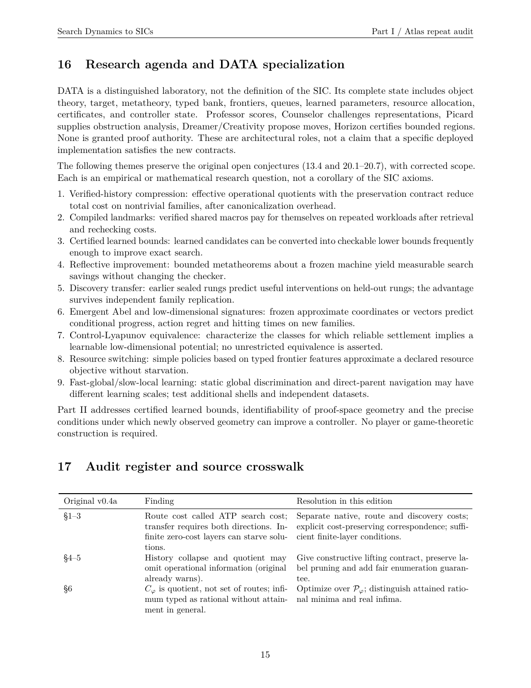
Readable text transcript — page 15
Search Dynamics to SICs Part I / Atlas repeat audit
16 Research agenda and DATA specialization
DATA is a distinguished laboratory, not the definition of the SIC. Its complete state includes object
theory, target, metatheory, typed bank, frontiers, queues, learned parameters, resource allocation,
certificates, and controller state. Professor scores, Counselor challenges representations, Picard
supplies obstruction analysis, Dreamer/Creativity propose moves, Horizon certifies bounded regions.
None is granted proof authority. These are architectural roles, not a claim that a specific deployed
implementation satisfies the new contracts.
The following themes preserve the original open conjectures (13.4 and 20.1–20.7), with corrected scope.
Each is an empirical or mathematical research question, not a corollary of the SIC axioms.
1. Verified-history compression: effective operational quotients with the preservation contract reduce
total cost on nontrivial families, after canonicalization overhead.
2. Compiled landmarks: verified shared macros pay for themselves on repeated workloads after retrieval
and rechecking costs.
3. Certified learned bounds: learned candidates can be converted into checkable lower bounds frequently
enough to improve exact search.
4. Reflective improvement: bounded metatheorems about a frozen machine yield measurable search
savings without changing the checker.
5. Discovery transfer: earlier sealed rungs predict useful interventions on held-out rungs; the advantage
survives independent family replication.
6. Emergent Abel and low-dimensional signatures: frozen approximate coordinates or vectors predict
conditional progress, action regret and hitting times on new families.
7. Control-Lyapunov equivalence: characterize the classes for which reliable settlement implies a
learnable low-dimensional potential; no unrestricted equivalence is asserted.
8. Resource switching: simple policies based on typed frontier features approximate a declared resource
objective without starvation.
9. Fast-global/slow-local learning: static global discrimination and direct-parent navigation may have
different learning scales; test additional shells and independent datasets.
Part II addresses certified learned bounds, identifiability of proof-space geometry and the precise
conditions under which newly observed geometry can improve a controller. No player or game-theoretic
construction is required.
17 Audit register and source crosswalk
Original v0.4a Finding Resolution in this edition
§1–3 Route cost called ATP search cost; Separate native, route and discovery costs;
transfer requires both directions. In- explicit cost-preserving correspondence; suffi-
finite zero-cost layers can starve solu- cient finite-layer conditions.
tions.
§4–5 History collapse and quotient may Give constructive lifting contract, preserve la-
omit operational information (original bel pruning and add fair enumeration guaran-
already warns). tee.
§6 Cφ is quotient, not set of routes; infi- Optimize over Pφ ; distinguish attained ratio-
mum typed as rational without attain- nal minima and real infima.
ment in general.
15Page 16 of 18
Open this page in PDF · Full-size page image · Page index
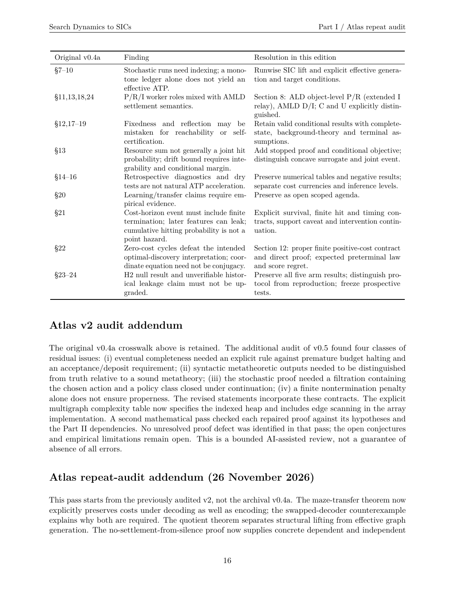
Readable text transcript — page 16
Search Dynamics to SICs Part I / Atlas repeat audit
Original v0.4a Finding Resolution in this edition
§7–10 Stochastic runs need indexing; a mono- Runwise SIC lift and explicit effective genera-
tone ledger alone does not yield an tion and target conditions.
effective ATP.
§11,13,18,24 P/R/I worker roles mixed with AMLD Section 8: ALD object-level P/R (extended I
settlement semantics. relay), AMLD D/I; C and U explicitly distin-
guished.
§12,17–19 Fixedness and reflection may be Retain valid conditional results with complete-
mistaken for reachability or self- state, background-theory and terminal as-
certification. sumptions.
§13 Resource sum not generally a joint hit Add stopped proof and conditional objective;
probability; drift bound requires inte- distinguish concave surrogate and joint event.
grability and conditional margin.
§14–16 Retrospective diagnostics and dry Preserve numerical tables and negative results;
tests are not natural ATP acceleration. separate cost currencies and inference levels.
§20 Learning/transfer claims require em- Preserve as open scoped agenda.
pirical evidence.
§21 Cost-horizon event must include finite Explicit survival, finite hit and timing con-
termination; later features can leak; tracts, support caveat and intervention contin-
cumulative hitting probability is not a uation.
point hazard.
§22 Zero-cost cycles defeat the intended Section 12: proper finite positive-cost contract
optimal-discovery interpretation; coor- and direct proof; expected preterminal law
dinate equation need not be conjugacy. and score regret.
§23–24 H2 null result and unverifiable histor- Preserve all five arm results; distinguish pro-
ical leakage claim must not be up- tocol from reproduction; freeze prospective
graded. tests.
Atlas v2 audit addendum
The original v0.4a crosswalk above is retained. The additional audit of v0.5 found four classes of
residual issues: (i) eventual completeness needed an explicit rule against premature budget halting and
an acceptance/deposit requirement; (ii) syntactic metatheoretic outputs needed to be distinguished
from truth relative to a sound metatheory; (iii) the stochastic proof needed a filtration containing
the chosen action and a policy class closed under continuation; (iv) a finite nontermination penalty
alone does not ensure properness. The revised statements incorporate these contracts. The explicit
multigraph complexity table now specifies the indexed heap and includes edge scanning in the array
implementation. A second mathematical pass checked each repaired proof against its hypotheses and
the Part II dependencies. No unresolved proof defect was identified in that pass; the open conjectures
and empirical limitations remain open. This is a bounded AI-assisted review, not a guarantee of
absence of all errors.
Atlas repeat-audit addendum (26 November 2026)
This pass starts from the previously audited v2, not the archival v0.4a. The maze-transfer theorem now
explicitly preserves costs under decoding as well as encoding; the swapped-decoder counterexample
explains why both are required. The quotient theorem separates structural lifting from effective graph
generation. The no-settlement-from-silence proof now supplies concrete dependent and independent
16Page 17 of 18
Open this page in PDF · Full-size page image · Page index
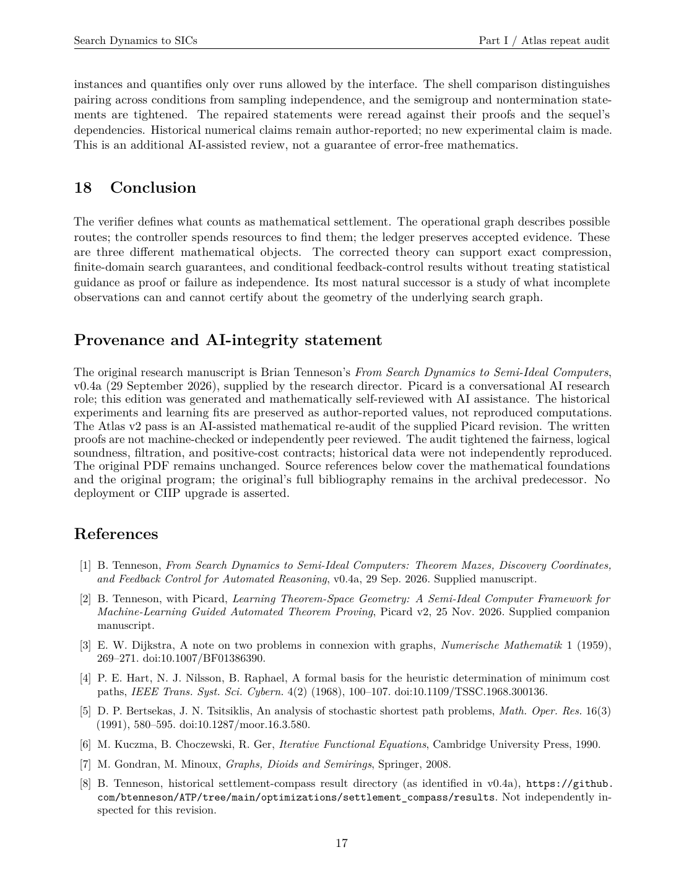
Readable text transcript — page 17
Search Dynamics to SICs Part I / Atlas repeat audit
instances and quantifies only over runs allowed by the interface. The shell comparison distinguishes
pairing across conditions from sampling independence, and the semigroup and nontermination state-
ments are tightened. The repaired statements were reread against their proofs and the sequel’s
dependencies. Historical numerical claims remain author-reported; no new experimental claim is made.
This is an additional AI-assisted review, not a guarantee of error-free mathematics.
18 Conclusion
The verifier defines what counts as mathematical settlement. The operational graph describes possible
routes; the controller spends resources to find them; the ledger preserves accepted evidence. These
are three different mathematical objects. The corrected theory can support exact compression,
finite-domain search guarantees, and conditional feedback-control results without treating statistical
guidance as proof or failure as independence. Its most natural successor is a study of what incomplete
observations can and cannot certify about the geometry of the underlying search graph.
Provenance and AI-integrity statement
The original research manuscript is Brian Tenneson’s From Search Dynamics to Semi-Ideal Computers,
v0.4a (29 September 2026), supplied by the research director. Picard is a conversational AI research
role; this edition was generated and mathematically self-reviewed with AI assistance. The historical
experiments and learning fits are preserved as author-reported values, not reproduced computations.
The Atlas v2 pass is an AI-assisted mathematical re-audit of the supplied Picard revision. The written
proofs are not machine-checked or independently peer reviewed. The audit tightened the fairness, logical
soundness, filtration, and positive-cost contracts; historical data were not independently reproduced.
The original PDF remains unchanged. Source references below cover the mathematical foundations
and the original program; the original’s full bibliography remains in the archival predecessor. No
deployment or CIIP upgrade is asserted.
References
[1] B. Tenneson, From Search Dynamics to Semi-Ideal Computers: Theorem Mazes, Discovery Coordinates,
and Feedback Control for Automated Reasoning, v0.4a, 29 Sep. 2026. Supplied manuscript.
[2] B. Tenneson, with Picard, Learning Theorem-Space Geometry: A Semi-Ideal Computer Framework for
Machine-Learning Guided Automated Theorem Proving, Picard v2, 25 Nov. 2026. Supplied companion
manuscript.
[3] E. W. Dijkstra, A note on two problems in connexion with graphs, Numerische Mathematik 1 (1959),
269–271. doi:10.1007/BF01386390.
[4] P. E. Hart, N. J. Nilsson, B. Raphael, A formal basis for the heuristic determination of minimum cost
paths, IEEE Trans. Syst. Sci. Cybern. 4(2) (1968), 100–107. doi:10.1109/TSSC.1968.300136.
[5] D. P. Bertsekas, J. N. Tsitsiklis, An analysis of stochastic shortest path problems, Math. Oper. Res. 16(3)
(1991), 580–595. doi:10.1287/moor.16.3.580.
[6] M. Kuczma, B. Choczewski, R. Ger, Iterative Functional Equations, Cambridge University Press, 1990.
[7] M. Gondran, M. Minoux, Graphs, Dioids and Semirings, Springer, 2008.
[8] B. Tenneson, historical settlement-compass result directory (as identified in v0.4a), https://github.
com/btenneson/ATP/tree/main/optimizations/settlement_compass/results. Not independently in-
spected for this revision.
17Page 18 of 18
Open this page in PDF · Full-size page image · Page index
Readable text transcript — page 18
Search Dynamics to SICs Part I / Atlas repeat audit
[9] B. Tenneson, The Universal Proof-Horizon Operator, v1.0, August 2026; and DATA 2.0.1: Proof-Horizon
Architecture, August 2026. Cited in original.
[10] B. Tenneson, Depths research program; Hilbert Space-Filling Curve Theorem Search, v0.5.3; DATA 3.0,
August 2026. Cited in original.
18